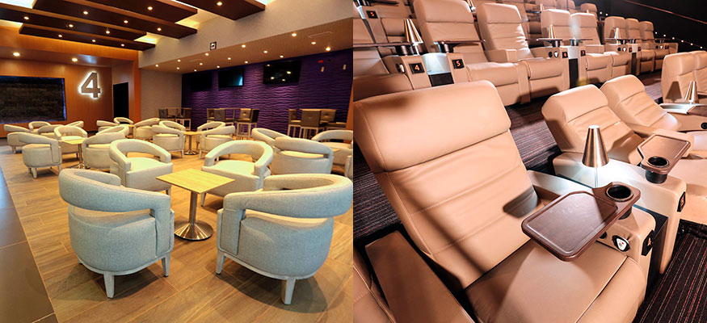

¿Qué películas se estrenan este mes?
Por: Jerrika Lozano
Para esta temporada nada mejor que ir a cine y ver los últimos estrenos de la cartelera, con el excelente servicio y la comodidad de los Multicines de Royal Films. ¡El mejor plan para toda la familia; disfrutar de las mejores películas y al mejor precio!
¡LLEVAMOS LA EXPERIENCIA DEL CINE A OTRO NIVEL!
En Roya Films contamos con las novedosas salas 4DX, una
de las tecnologías más avanzadas que ofrece una experiencia cinematográfica totalmente envolvente.
La nueva sala 4DX excede la tercera dimensión, además de una proyección y sonido de alta calidad, la sala cuenta con efectos multisensoriales, sillas con movimiento, efectos ambientales como el viento, burbujas, y aroma, trabajan en perfecta sincronía con la acción en la pantalla.
Cada silla está equipada con simuladores programados para realizar movimientos básicos y poder crear un sin fin de combinaciones posibles para imitar acciones tales como volar y conducir.
Además de los movimientos, la sala está equipada con efectos ambientales para mejorar aún más la experiencia. A partir de un juego de luces para simular una tormenta, ventiladores para recrear brisas suaves, rociadores para generar sensación de humedad y esencia de olor real.
AVENGERS: INFINITY WAR
Como parte de un recorrido cinematográfico sin precedentes de diez años, de creación y expansión del Universo Cinematográfico de Marvel, AVENGERS: INFINITY WAR trae a la pantalla la mayor confrontación de todos los tiempos. Los Vengadores y sus superhéroes aliados deberán estar dispuestos a sacrificarlo todo para derrotar al poderoso Thanos antes de que él destruya el universo.
RAMPAGE: DEVASTACIÓN
Davis Okoye es un experto en primates y un hombre que se mantiene a distancia de la gente. Tiene un vínculo entrañable con George un gorila espalda plateada extraordinariamente inteligente a quien ha cuidado desde que nació. Cuando un experimento genético se sale de control, provoca que George mute de ser un simio gentil a una criatura furiosa de proporciones monstruosas. Para acabar de empeorar la situación, se descubre que hay más animales con alteraciones similares. Mientras estos nuevos depredadores alfa destruyen todo lo que encuentran a su paso por Estados Unidos, Davis Okoye busca un antídoto junto con un ingeniero desacreditado. Ellos deberán enfrentar un campo de batalla que cambia todo el tiempo no solamente para evitar una catástrofe mundial, sino también para salvar a la criatura temeraria que alguna vez fue su amigo.
DEADPOOL 2
Después de haber sobrevivido un ataque bovino casi mortal, un desfigurado chef de cafetería (Wade Wilson) lucha por cumplir su sueño de convertirse en el barman más atractivo de Mayberry, mientras aprende a lidiar con la pérdida de su sentido del gusto. Wade, quien busca recuperar la chispa de la vida, así como un condensador de flujo, deberá pelear contra ninjas, el yakuza y una jauría de perros sexualmente agresivos, mientras viaja por todo el mundo para descubrir la importancia de la familia, la amistad y el sabor, encontrando un nuevo gusto por la aventura y recibiendo la codiciada taza de café con el título a ‘Mejor amante del mundo’.
YO SOY SIMÓN
LOVE, SIMON
Todo mundo merece una gran historia de amor. Pero para Simon Spier, un chico de diecisiete años, resulta ser un poco más complicado: todavía no le dice a su familia o amigos que es gay y de hecho, ni siquiera conoce la identidad del compañero de clase anónimo del que se ha enamorado en línea. Resolver ambas cuestiones prueba ser hilarante, aterrador. Dirigida por Greg Berlanti escrita por Isaac Aptaker y Elizabeth Berger y basada en la aclamada novela de Becky Albertalli, Love, Simon es una historia divertida y sincera acerca del viaje emocionante de encontrarte a ti mismo y enamorarte, para poder alcanzar la adultez.
MAESTRO DEL ROBO
PICKPOCKETS
Fresh es un joven ladrón que sueña con convertirse en un carterista para robar sin usar la violencia. Fresh se encuentra con Chucho, un guardia de seguridad dispuesto a enseñarle los trucos que necesita a cambio de dinero. Con sus amigos Juana y Doggy, Fresh se encontrará con la codicia, la adrenalina del dinero fácil y las situaciones peligrosas que los llevarán a reconsiderar sus vidas y los caminos que quieren tomar.
VERDAD O RETO
TRUTH OR DARE
Un grupo de amigos comienza a jugar a “Verdad o te atreves, pero rápidamente descubren que algo que empezó de forma inocente se ha vuelto peligroso. Si no siguen las normas o se niegan a jugar, serán poseídos por un demonio que les obligará a matar, a sí mismos o a los demás. El grupo tratará de hacerlo lo más seguro posible eligiendo siempre la verdad, pero el juego tomará el control y les forzará a realizar las pruebas más horribles que se puedan imaginar. Una vez que el juego empieza, los jugadores no podrán parar de jugar, por lo que la única forma de sobrevivir es pasarle el juego a otra persona.